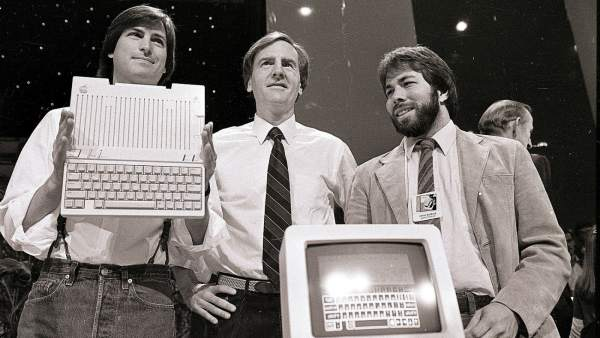

Macintosh: El comienzo de lo que hoy en dia se conoce como MAC
Steve Wozniak: "Steve Jobs, mi mejor amigo, cogía mis diseños y los convertia en productos"

Steve Jobs, Jhon Sulley y Steve Wozniak, en la presentación del Apple IIc en San Francisco, en 1984.
Grandes Éxitos de MAC
Año
Producto
1977
Apple II
1983
Lisa
1984
Mac
1985-1987
Pixar
1998
iMac
2001
iPod
2001-2002
iTunes y Apple Store
2007
iPhone
2010
iPad
"Muerte de Steve Jobs: 5 de octubre de 2011
Sitio Web Oficial
https://www.apple.com/es/